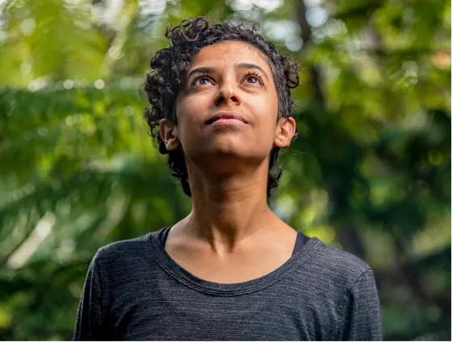

Casa editorial · desde o gueto
Cada título nasce de uma linha: raízes, travessias, ancestralidade e vivências. Uma editora que publica para quem sempre esteve no centro da história e à margem do catálogo.
Manifesto
A Cria Gueto Cria nasce da certeza de que literatura negra escrita por mulheres não é nicho: é fundação. Publicamos poesia, romance, ensaio, memória e teatro com o padrão de uma casa editorial clássica e a ética de uma ocupação.
O acervo digital, antes disponível apenas no Google Drive, agora ganha espaço nesta biblioteca. Os concursos literários, com seus regulamentos completos, também estão disponíveis para consulta. E a área administrativa, destinada a quem mantém a casa em funcionamento, também tem seu espaço.

Origem
Nossa missão é acolher e dar espaço às vozes de mulheres negras e fazer suas histórias chegarem cada vez mais longe. Acreditamos na literatura como expressão, memória e resistência. Por isso, reunimos e divulgamos gratuitamente obras que merecem ser lidas, compartilhadas e reconhecidas.
Catálogo
Chamadas